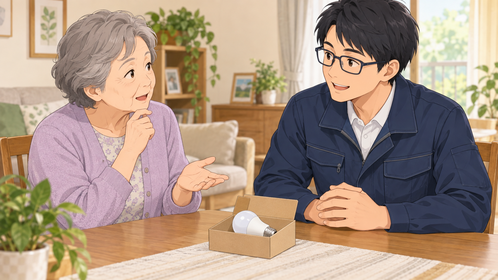

/ 電球交換
電球1個の交換でも頼める？小さな用事を相談したい方へ
ほかの用事とまとめなくても大丈夫。電球の準備や料金など、小さな依頼で気になることを整理しました。
記事を読む記事一覧
相談前の準備や、依頼するときに伝えたいことをまとめています。

/ 電球交換
ほかの用事とまとめなくても大丈夫。電球の準備や料金など、小さな依頼で気になることを整理しました。
記事を読む/ 家具組立
説明書のどこで止まったか、今はどんな状態か。組立途中の家具を相談するときの伝え方をまとめました。
記事を読む/ 浴室水栓
商品情報、今の水栓の写真、依頼したい範囲。相談を始めるための3つの準備をご紹介します。
記事を読む